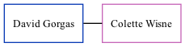

David Gorgas, the husband of Colette Marie Wisne (the sixth cousin once-removed on the mother's side of Nigel Horne), and married Colette in Palm Beach, Florida, USA on Feb 17, 1996.
Family Tree

Generated by ged2site. Last updated on Nov 13, 2024